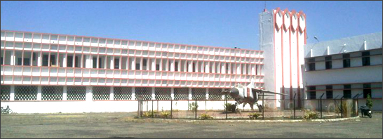
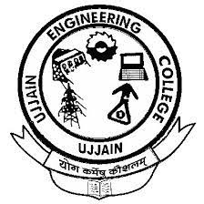

UJJAIN ENGINEERING COLLEGE, UJJAIN
formerly known as Govt. Engineering College, Ujjain was established in 1966 by Govt. of M.P. with a view to improve the technical education. Qualified engineering graduates may thus be produced who could bear the responsibility of providing impetus to growing industrialization of the country. Initially there were only three branches of engineering i.e. Civil, Mechanical and Electrical. Later on Electronics Engineering (1985) and Chemical Engineering (1986) branches were introduced. From Session 2001-2002 B.E. Computer Science and Engineering course has also been started.
The college was declared autonomous by the state Govt. in the year 1998. Under this arrangement it is governed by a Governing Body, whose Chairman is minister of Technical Education And Skill Development Department of Govt. of M.P. and Secretary is principal, Engineering College, Ujjain. This college has produced quality graduate engineers in different branches of engineering who have been absorbed in almost all the major public sectors and private sectors industries of the country.
The feedback confirms the excellent track record of high-class performance of the students in different organizations. Many of its alumni are rendering their services to countries like USA, UK, Canada, France, Australia etc. The all India Council of Technical Education (AICTE) New Delhi has recognized it since beginning as a recognized engineering college with full participation in all the activities of AICTE.
Situated at Indore Road, the college has vast campus spreading over nearly 300 acres of land. It has a strong infrastructure to support the cause of imparting technical education to budding engineers.
The Post Graduate Courses undertaken by the college would add further excellence in the development of technical education. The college is an object of pride for technical education of Madhya Pradesh.